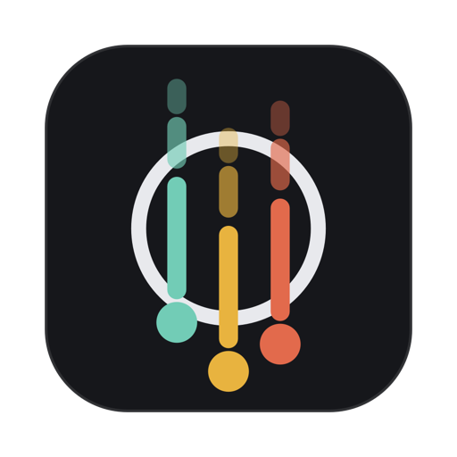

NeutrinoSupport
Questions, bugs or ideas: email support@neutrinoapp.io.
Keyboard shortcuts
Press ? inside Neutrino to see this list at any time.
| J K | Move down and up. Hold Shift to select several, Option to carry a task along. |
| C | Write a new task. Inside a task it adds subtasks, and Enter starts the next one. |
| E | Mark done. Finished tasks move to the Archive tab. |
| Z | Undo. Shift + Z redoes. |
| H | Set a due date in plain words: tomorrow, 10am thu, next week, 8/10, 3 days. |
| L | Add or remove a label. Each label becomes a tab along the top. |
| D S | Indent and outdent, to nest a task under the one above. |
| Enter | Open a task to add a description and subtasks. Esc goes back. |
| Tab | Switch tabs. |
| ⌘ K | Search every task and every command. |
Where is my list saved?
As a single markdown file called todo.md. Press ⌘ K and choose Show the tasks file to see it in Finder.
How do I use it on more than one Mac?
Press ⌘ K, choose Sync with Google Drive, and pick a folder that syncs between your Macs, such as one in iCloud Drive, Google Drive or Dropbox. Do the same on the other Mac and both will share one list.
I finished a task by mistake
Press Z straight away to undo, or open the Archive tab, select the task and press E to bring it back.